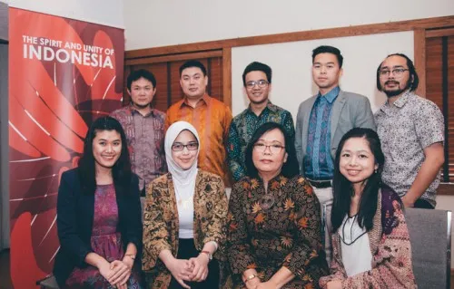
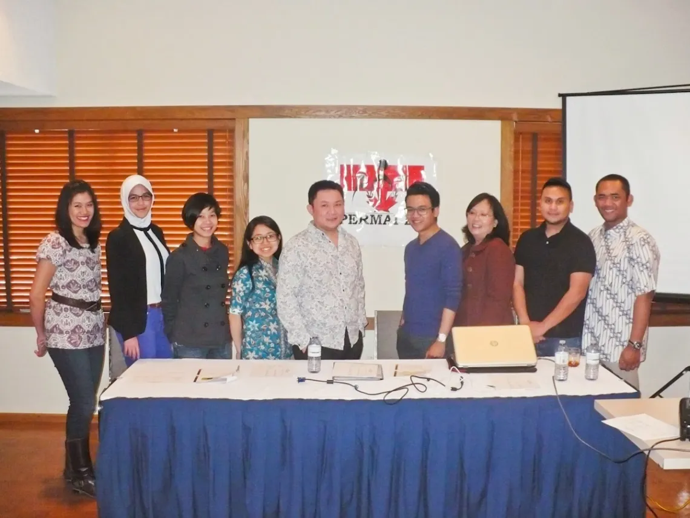
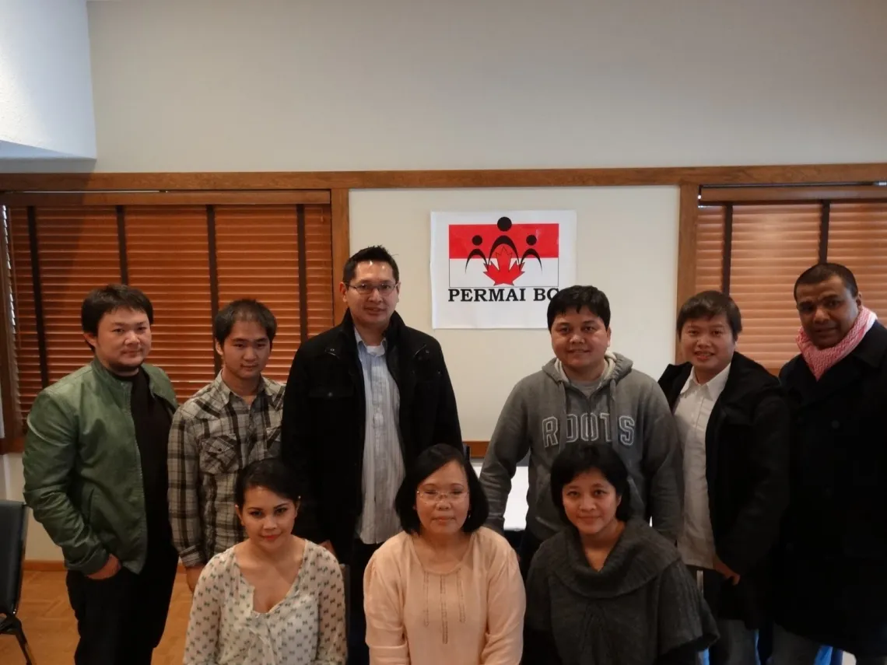
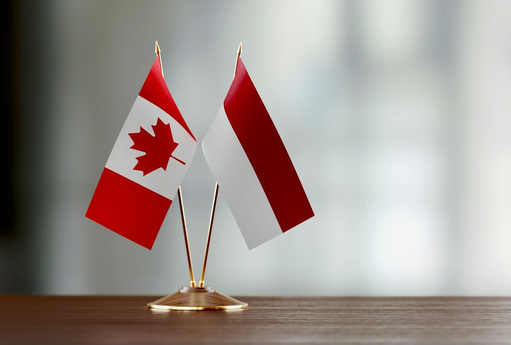
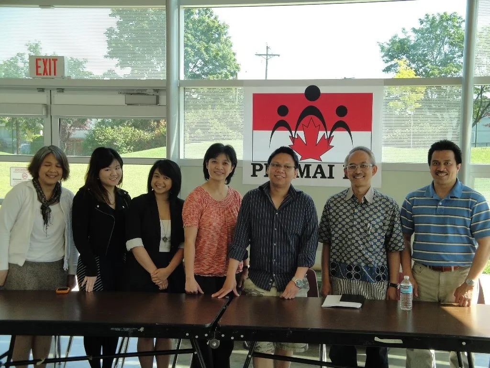
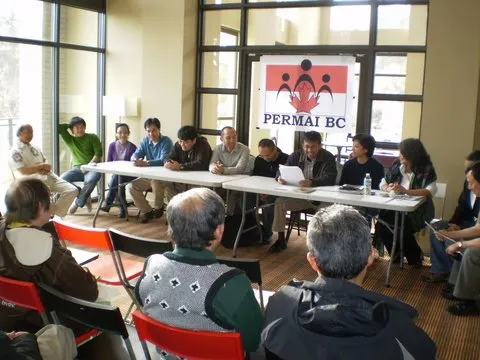

Connecting Indonesians in BC Through Culture, Unity, and Community

PERMAI-BC stands for Persatuan Masyarakat Indonesia di British Columbia, Canada (Indonesian Community Association of British Columbia, Canada), is a non-profit and non-political organization based in Vancouver, BC with missions to foster closer cooperation among Indonesians in BC, and to introduce Indonesian arts and culture to Canadians in general.PERMAI-BC was originally formed in 1995 by several members of the local Indonesian, Dutch-Indonesian, and Canadian who had lived in Indonesia, to fill the need of Indonesians in BC to congregate without any political, ethnic or religious boundaries, and to reconnect with the Indonesian culture and heritage. Currently, almost 7,000 Indonesians lived in BC, about half lived in Vancouver and throughout the Lower Mainland.

"To unite and support the Indonesian community in British Columbia by fostering inclusive social connections, preserving and promoting Indonesian culture and heritage, and building awareness and appreciation of Indonesian arts and traditions within the wider Canadian society."





"To unite and support the Indonesian community in British Columbia by fostering inclusive social connections, preserving and promoting Indonesian culture and heritage, and building awareness and appreciation of Indonesian arts and traditions within the wider Canadian society."